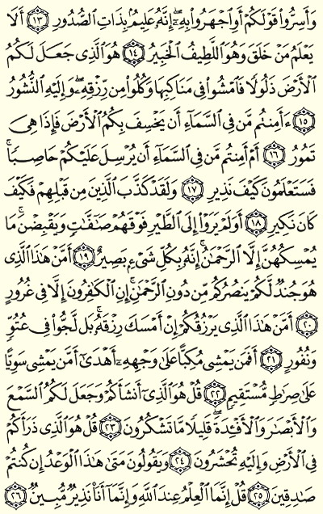
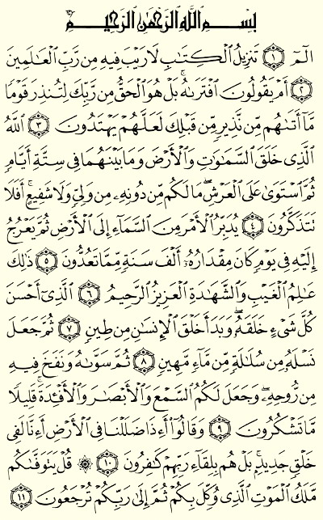
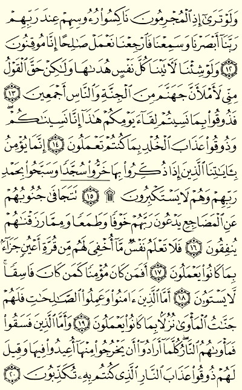
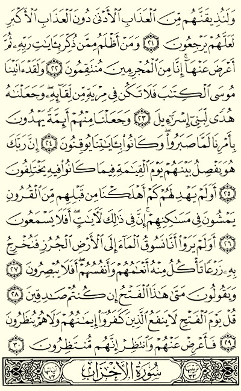

Welcome to thesunnahrevival.wordpress.com
The Sunnah Revival is a blog which was founded On Wednesday 9th April,2014 corresponding with 9th Jumadal akhir 1435 by three dedicated Muslims.Their Intention being to revive the Sunnah of Our Beloved Prophet(SAWS).
Why Revive The Sunnah?
Allah says in Quran:
Say: If you (really) love Allah then follow me [SAWS], Allah will love you and forgive you your sins. And Allah is Oft-Forgiving, Most Merciful.[Al-Imran:31]
He also says in another verse:
Truly, in the Messenger of Allah [SAWS] you have a good example to follow for the one who hopes for the Meeting with Allah and the Last Day and remembers Allah much.
Prophet Muhammad (SAWS) says:
Whoever revives an aspect of my Sunnah that is forgotten after my death, he will have a reward equivalent to that of the people who follow him, without it detracting in the least from their reward.”
[Reported by al-Tirmidhi]
Join us in Reviving The Sunnah by:
We are also android app developers and you can see our apps here.
Find us on Twitter
Join our Facebook group to connect with other revivers of the Sunnah In Shaa Allah

Alhamdulillah we have launched a our new whatsapp service where we aim in sha Allah to send our subscribers:
We promise not to spam you
Join now for freeFill this form and we will contact you via Whatsapp soon in shaa Allah